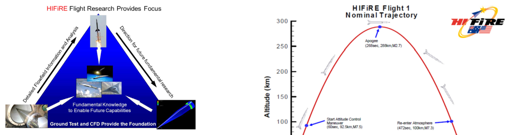
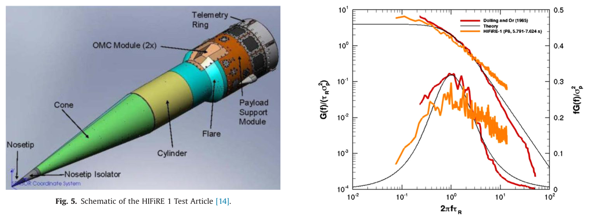
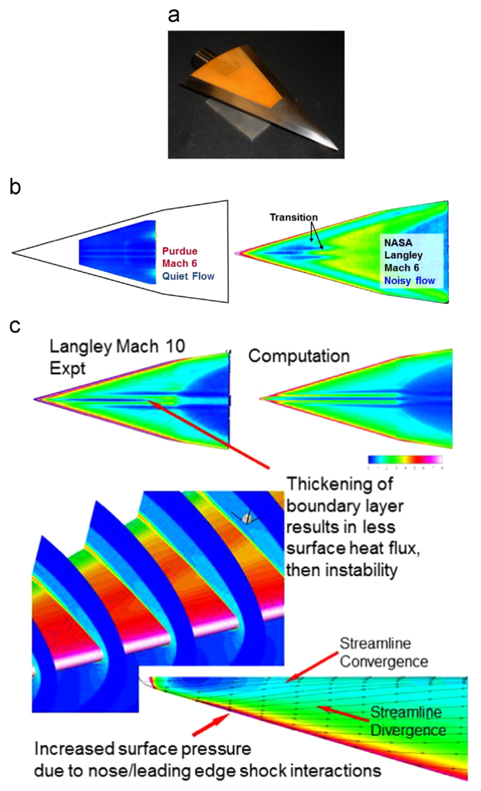
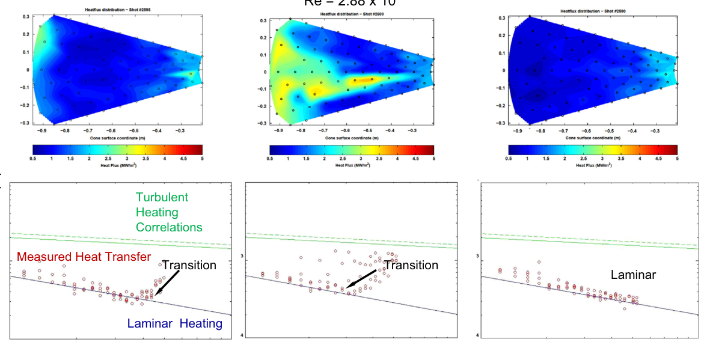

01中文摘要
本文介绍2001年以来美国空军科学研究办公室（AFOSR）气动热力学与湍流研究计划的背景、布局和实施情况。文章说明与NASA、Sandia国家实验室共同制定的《国家高超声速基础研究计划》，以及HIFiRE飞行试验和STAR转化计划在提供飞行数据、推动基础研究向技术转化方面的作用。作者指出，未来计划将重点关注动能、内能（振动/电子）与化学能之间的能量传递机制，将其作为流动控制新途径，并拓展该研究组合对空军其他领域的贡献。
原始摘要（英文/原文）
This paper documents the programmatic context and considerations that have shaped the development and execution of a number of research initiatives implemented by the Air Force Office of Scientific Research Aerothermodynamics and Turbulence portfolio since 2001. The National Hypersonic Foundational Research Plan has been developed in concert with NASA and Sandia National Laboratories to coordinate strategic planning in the scientific disciplines relevant to hypersonic technologies. The HIFiRE program has provided flight data to provide insight into the behavior of critical phenomena in-flight and helped address several key objectives identified in the National Hypersonic Foundational Research Plan. The STAR initiative facilitated the transition of knowledge and capabilities from basic research to technology development and has made key contributions to national-scale programs and Test and Evaluation capabilities. In the future the portfolio will focus on energy transfer mechanisms between kinetic, internal and chemical modes as a potential approach to new flow control capabilities and to expand the contributions of the portfolio to other areas of interest to the Air Force.
02阅读说明
文章类型：项目回顾/展望性综述（perspective），非状态综述（作者明确“not intended as a review of the state-of-the-art”）。材料范围：bundle 952 行（PDF 14 页，期刊 Progress in Aerospace Sciences 72 (2015) 3-16）已全部读至末尾，含正文、图1-16 图注与参考文献。图表可读性：图注完整，正文文字层清晰；图内曲线/标注只能依据图注与正文描述，未逐点读数（如 Fig. 14 的转捩 Reynolds 数曲线、Fig. 6/7 的谱图幅值）。信息完整度：项目、机构、工具、经费、人数等信息较多，但多数为定性叙述，缺少来流条件、几何尺寸与不确定度；无公式推导。提取口径：只取正文明确陈述；图内数值仅取正文点名者；未给出的写“文中未提及”。 文章类型：期刊、综述
03一句话核心与三句话摘要
回顾 AFOSR 2001—2013 气动热布局：HIFiRE 飞行、STAR 转化、NHFRP 规划与能量传递新方向。
- 问题与缺口：高超声速能力依赖多学科集成，气动热环境定义了许多学科的科学挑战边界；地面设施尺寸跟不上飞行器尺度、飞行数据稀缺，层流-湍流转捩与激波/边界层干扰非定常是最关键的两个科学挑战。 原文明确
- 方法与范围：以项目回顾方式梳理 AFOSR 气动热与湍流 portfolio 2001—2013 年的主要举措——HIFiRE 国际飞行研究、STAR 转捩分析转化、NHFRP 国家基础研究规划，以及以动能-内能-化学能传递为核心的新方向，并用“金字塔”框架说明地面试验、数值模拟与飞行研究的集成关系。 AI概括
- 结论/贡献：HIFiRE-1 提供了据称首次的飞行中 SBLI 非定常验证；STAR 的 STABL 与 US3D 分别转化到 25 家和 15 家以上机构；NHFRP 划定六个科学领域并促成 NASA/AFOSR 五年约 3000 万美元投入；未来重点是以能量传递机理实现“固有流动控制”。 AI概括
04核心内容清单
| 要点 | 类型 | 重要性 | 原文依据 | 属性 |
|---|---|---|---|---|
| 高超声速的价值用 15 min 覆盖面积量化：Mach 6 约为常规系统的 50 倍，Mach 9 约为 120 倍；等效覆盖需约 50 套常规系统。 | 需求/动机 | A | PDF p.3-4（§1.1），图1 | 原文明确 |
| 近期高超声速项目可分为两类：吸气式/集成挑战型（低 Mach、转捩与非定常激波干扰主导）与滑翔/非平衡挑战型（高 Mach、热化学速率与气-面反应主导）。 | 技术分类 | A | PDF p.4（§1.2），图2 | 原文明确 |
| HIFiRE 采用“金字塔”方法：数值模拟与地面试验为基础，飞行研究聚焦、集成并反馈，用于验证与外推而非获取全部细节认识。 | 方法学框架 | A | PDF p.6（§2.2），图3 | 原文明确 |
| HIFiRE-1 首次（或最早之一）在飞行中验证了 SBLI 非定常：脉动压力呈双峰分布，功率谱含地面研究广泛报道的低频成分。 | 飞行验证 | A | PDF p.7（§2.3），图6、图7 | 原文明确 |
| HIFiRE-1 转捩：上升段小攻角出现二模态转捩；下降段攻角偏大，同时出现横流与二模态诱导转捩。 | 飞行转捩 | A | PDF p.7（§2.3） | 原文明确 |
| HIFiRE-5 用椭圆锥获得强横流数据，但二子级故障未达设计窗口；HIFiRE 项目迄今 5 次飞行、成功率 80%。 | 飞行项目状态 | B | PDF p.6-7（§2.3），图8 | 原文明确 |
| STAR 以“先进数值方法 + 转捩专家”双策略支持 HTV-2 与 X-51：静风洞 TSP 显示常规风洞高扰动环境会明显提前转捩，据此修改 HTV-2 头形。 | 技术转化 | A | PDF p.8（§3.1），图9、图10 | 原文明确 |
| STABL（原 PSECHEM）已被 25 家以上机构采用，US3D 已转化到 15 家以上机构；T&E 形成 US3D+STABL+PCB+TSP 的集成转捩评估能力。 | 工具转化 | A | PDF p.9-10（§3.2-3.3） | 原文明确 |
| NHFRP 针对 SAB 指出的 boom-and-bust 循环，把基础研究资金与技术周期解耦，设六个科学领域、2010/2020/2030 三档目标；2009 年 NASA/AFOSR 投入近 3000 万美元建三个中心。 | 国家规划 | A | PDF p.11-12（§4），图11-13 | 原文明确 |
| 能量传递可作为流动控制新范式：亚临界粗糙元控制横流、声吸收壁使转捩 Re 提高近 50%、放热/吸热反应改变湍流强度、CO2 内振动吸收延迟二模态转捩。 | 新方向/机理 | A | PDF p.13-14（§5.1） | 原文明确 |
| CO2 使锥体转捩 Reynolds 数比空气/N2 高约 4 倍，机制是二模态频段与 CO2 分子声吸收频段重叠；向 Mach 5 边界层注入 CO2 可延迟转捩（4.12×10^6→5.22×10^6），Ar 注入则提前（2.88×10^6）。 | 定量机理 | A | PDF p.14（§5.1），图14-16 | 原文明确 |
| 作者认为受训学生进入政府/工业是最重要的技术转化；未来 portfolio 将扩展到热管理与定向能等其他空军关注领域。 | 判断/展望 | B | PDF p.10、p.14-15 | 原文明确 |
05引言：研究问题与领域缺口
【原文明确】作者以 AFOSR 成立 60 周年为契机，回顾 2001—2013 年 AFOSR 气动热与湍流 portfolio 的主要主题，并声明本文“not intended as a review of the state-of-the-art”，而是对项目背景与优先级的反思（PDF p.3）。动机：速度与射程历来被视为改变战局的军事优势；近十年高超声速应用主要聚焦对时间敏感目标的快速响应，其次才是经济进入空间；DoD 的“Pivot to the Pacific”进一步推动对快速覆盖远距离武器的兴趣（PDF p.3）。作者用图1 量化：从华盛顿特区出发 15 min，常规系统覆盖中大西洋地区，Mach 6 可到落基山脉，Mach 9 几乎可达西海岸；按固定时间覆盖面积计，Mach 6 约为常规系统的 50 倍，Mach 9 约为 120 倍；若用常规系统达到同等面积/时间覆盖需部署约 50 套系统及其基础设施与人员，因而高超声速系统具有潜在经济效率优势（PDF p.4，图1）。技术挑战：图2 用“名义 Mach 数 vs 非平衡效应程度”空间把近期项目分为两类——蓝色区域以吸气式推进为主，受系统集成、层流-湍流转捩与非定常激波干扰支配，来流 Mach 数通常低到热化学非平衡不显著；浅褐色区域以滑翔系统为主，受高 Mach 数激波后高温解离环境支配，热化学速率决定内能向热能的释放，气动热预测精度受反应速率精度制约，气体-表面反应与材料近表面区域也是挑战（PDF p.4，图2）。作者指出，已飞行的动力高超声速系统主要是高度一体化的升力体，气动与推进强耦合；无动力再入系统的热防护需要气动热、材料响应与结构载荷的多学科综合考虑（PDF p.4）。AFOSR 的定位是投资与管理美国空军基础研究预算，强调识别和支持可能带来“game-changing capabilities”的创新研究；portfolio 当前重点为湍流与边界层基础物理、激波主导流动（尤其激波/边界层与激波/激波干扰）、热化学非平衡流动；双重目标是培育创新科学并推动技术转化（PDF p.4）。
06流动条件与几何构型
| 项目 | 数值/描述 | 依据 | 备注 |
|---|---|---|---|
| 文献性质与时间范围 | AFOSR Aerothermodynamics & Turbulence portfolio 项目回顾，覆盖 2001—2013 年；非状态综述 | PDF p.3（摘要、§1） | 作者明确声明不系统评述文献 |
| HIFiRE-1 飞行剖面 | 两级探空火箭助推至抛物线弹道；captive-carry；近远地点由头朝上转为头朝下；靠重力加速下落在返回段达到高超声速 | PDF p.6（§2.3），图4 | 具体 Mach 数、动压、高度文中未提及 |
| HIFiRE-1 几何 | 圆形锥前体 + 背部 flare；flare 产生平面斜坡激波/边界层干扰的轴对称类比 | PDF p.6（§2.3），图5 | 锥角、flare 角与长度文中未给出 |
| HIFiRE-5 几何 | 椭圆锥；长轴到短轴强压力梯度在边界层内产生显著横流 | PDF p.7（§2.3），图8 | 椭圆度、长度、攻角文中未给出 |
| HIFiRE-1 来流/壁面条件 | 文中未提及（无 Ma、Re、T∞、Tw、攻角的定量值） | PDF p.6-7 | |
| CO2/Ar 注入实验条件 | 锥体，流动焓 10 MJ/kg；CO2 或 Ar 注入率 11.6 g/s；零注入为对照；正文称向 Mach 5 来流空气边界层注入 | PDF p.14（§5.1），图16 | 模型尺寸、单位 Reynolds 数、注入位置文中未给出 |
| 转捩 Reynolds 数对比条件 | 锥体，空气/CO2/N2，多个流动焓（具体焓值与单位 Re 文中未列出，仅见图14） | PDF p.14，图14 | |
| 双锥盲对比验证 | 高焓双锥流动，多组数值模拟与实验“盲”对比；具体来流条件文中未提及 | PDF p.10（§3.4） | |
| 声吸收壁实验 | 锥体一侧覆盖盲孔作为声阻尼、另一侧光滑；转捩 Re 提高近 50% | PDF p.13（§5.1） | Mach 数、单位 Re、孔径/深度文中未给出 |
| HTV-2 地面试验环境 | Purdue Quiet Flow Ludwieg Tube（类飞行低扰动）vs 常规风洞（高扰动）；模型为 HTV-2 前体 | PDF p.8（§3.1），图9 |
07核心现象与关键参数
| 参数 | 定义 | 数值 | 关系/说明 | 依据 |
|---|---|---|---|---|
| 15 min 覆盖面积倍率 | 以华盛顿特区为起点，固定 15 min 内覆盖面积与常规系统之比 | Mach 6 约 50 倍；Mach 9 约 120 倍 | 图1 的定性/半定量对比 | PDF p.4（§1.1），图1 |
| HIFiRE 飞行次数与成功率 | 9 次研究飞行 + 1 次工程风险降低飞行；已飞 HF0、HF1、HF2、HF5、HF3 | 迄今成功率 80% | 5 次已飞中 4 次成功 | PDF p.6（§2.3） |
| STABL 采用机构数 | STability Analysis for Boundary Layers，由 PSECHEM 改造 | 25 家以上（含空军多个单位、NASA、Sandia、主要机体商、多所大学） | 技术转化指标 | PDF p.9（§3.3） |
| US3D 采用机构数 | 非结构、动能守恒通量重构的高超声速 CFD 求解器（DPLR 改进版） | 15 家以上 | 技术转化指标 | PDF p.9（§3.3） |
| NHFRP 科学领域数 | Boundary Layer Physics、Shock-Dominated Flows、Nonequilibrium Flows、Supersonic Combustion、Environment/Structures and Material Interactions、High-Temperature Materials and Structures | 6 个 | 规划框架 | PDF p.11（§4.2） |
| NHFRP 目标年份 | 近期/中期/远期科学目标 | 2010 / 2020 / 2030 | 2007 年研讨会确定，2009 年微调 | PDF p.11（§4.2） |
| NHFRP 联合投入 | NASA 与 AFOSR 2009 年联合投资，建三个 National Hypersonic Science Centers | 近 3000 万美元/5 年；18 所大学、100 多名研究生 | 规划落地规模 | PDF p.12（§4.3） |
| 转捩 Reynolds 数（零注入） | 锥体 10 MJ/kg 条件下由图16 标注的转捩 Re | 4.12×10^6 | CO2/Ar 注入对比基准 | PDF p.14，图16 |
| 转捩 Reynolds 数（CO2 注入） | CO2 注入率 11.6 g/s | 5.22×10^6（转捩推迟） | 较零注入提高约 27% | PDF p.14，图16 |
| 转捩 Reynolds 数（Ar 注入） | Ar 注入率 11.6 g/s | 2.88×10^6（转捩提前） | 较零注入降低约 30% | PDF p.14，图16 |
| CO2 与空气/N2 转捩 Re 比 | 同焓锥体实验的转捩 Reynolds 数对比 | 相差约 4 倍（CO2 更高） | 图14 的总体趋势 | PDF p.14（§5.1 首段），图14 |
| 声吸收壁转捩 Re 增益 | 锥体有盲孔侧与光滑侧的转捩 Reynolds 数对比 | 有孔侧高近 50% | 二模态被声吸收衰减 | PDF p.13（§5.1） |
| PCB 传感器频响 | 压电式高频压力传感器，用于探测二模态 | 可测数百 kHz | 二模态频率量级 | PDF p.9（§3.2） |
| X-51 TSP 转捩位置差 | 类飞行静环境 vs 常规噪声环境的 trips 有效性 | 静环境转捩位于入口斜坡拐角下游 6 英寸（图中虚线），噪声环境在拐角处 | 地面设施噪声对转捩的影响 | PDF p.8（§3.1），图10 |
08方法与数据
【原文明确】本文为项目回顾，不是系统综述：没有说明文献检索范围、纳入/排除标准或证据分级；叙述对象是 AFOSR Aerothermodynamics & Turbulence portfolio 在 2001—2013 年支持的四类举措——HIFiRE（Hypersonic International Flight Research and Experimentation）、STAR（STability Analysis for Reentry）、NHFRP（National Hypersonic Foundational Research Plan）以及能量传递机理研究（PDF p.4-5）。作者按“便于逻辑展开而非时间顺序”组织，并声明层流-湍流转捩是贯穿全文的反复主题（PDF p.5）。证据来源包括：（1）飞行试验——HIFiRE 0/1/2/3/5 等，共 9 次研究飞行加 1 次工程风险降低飞行，迄今成功率 80%（PDF p.6）；（2）地面试验——Purdue Quiet Flow Ludwieg Tube、AEDC Tunnel 9、常规风洞、CUBRC 双锥/双楔实验（PDF p.8-9）；（3）数值工具——US3D（非结构 DPLR 改进版，动能守恒通量重构）、STABL（由 PSECHEM 改造的稳定性分析工具）、NASA LASTRAC（PDF p.9）；（4）诊断——PCB 高频压力传感器（可测数百 kHz 二模态）、温敏漆（TSP）、HYTHIRM 红外热像（PDF p.8-10）；（5）规划文件——2000 年空军科学顾问委员会（SAB）报告、2007/2009 年 NHFRP 研讨会（PDF p.11-12）。【AI概括】文中没有给出任何实验的不确定度、重复性、网格/收敛信息或统计方法；“首次”“显著”等判断多为作者基于项目经验的定性评价，缺少可复核的量化指标。
| 项目 | 内容 | 依据 | 备注 |
|---|---|---|---|
| 研究类型 | 资助机构的项目回顾与展望（perspective），非系统综述、非实验/数值研究 | PDF p.3（§1） | |
| 检索与纳入标准 | 文中未提及（无文献检索范围、纳入/排除标准、证据分级） | PDF p.3-5 | |
| 叙述框架 | 按 HIFiRE → STAR → NHFRP → 未来能量传递方向展开，非时间顺序；转捩为贯穿主题 | PDF p.5（§1.3 末） | |
| 飞行研究 | HIFiRE 0/1/2/3/5；9 次研究飞行 + 1 次风险降低飞行；抛物线 captive-carry 弹道；公开数据政策 | PDF p.5-7 | |
| 地面试验设施 | Purdue Quiet Flow Ludwieg Tube、AEDC Tunnel 9、常规高超声速风洞、CUBRC 双锥/双楔设备 | PDF p.8-10 | |
| 数值工具 | US3D（非结构 DPLR，动能守恒通量重构）、STABL/PSECHEM（PSE + 有限速率化学）、NASA LASTRAC | PDF p.9（§3.2） | |
| 测量/诊断 | PCB 高频压力传感器（二模态，数百 kHz）、温敏漆 TSP、HYTHIRM 红外热像、脉动压力时间历程与功率谱 | PDF p.7-10 | |
| 不确定性/误差分析 | 文中未提及（无实验不确定度、重复性、网格收敛或统计误差） | 全文 | |
| 验证方式 | 飞行数据与地面风洞数据的定性/谱对比；RTO AVT-136 双锥“盲”对比；无定量精度指标 | PDF p.7、p.10 | |
| 规划方法 | 2007 年 NASA Langley 研讨会（约 50 人、每领域 8~10 名专家）+ 2009 年第二次研讨会；两层目标（顶层综合目标 + 各领域具体目标） | PDF p.11（§4.2） |
09核心推导与公式
原文未给出从守恒律出发的完整解析推导；以下仅列出材料中可核对的定义或建模链，不补写教科书推导。
本文为项目回顾/展望，不含控制方程、模型推导或数学闭合；其“论证”是组织与科学逻辑：需求→两类技术挑战→飞行/转化/规划三类举措→能量传递新范式。文中未给出任何公式。
关键假设
- 文中未给出推导，故无数学假设可列
- 论证层面的隐含前提：飞行数据可用来验证并外推地面试验与数值模拟（PDF p.6）
- 隐含前提：基础研究资金与技术开发周期解耦可维持专家队伍（PDF p.11）
适用边界：因无推导，不能从本文提取或复现任何峰值热流、转捩位置、增长率或流场量的计算公式；文中也未给出用于支撑图14-16 的定量模型。若需公式化内容，须转向其引用的原始文献（如 Leyva、Wagnild & Candler、Saric 等），本文不能作为公式来源。
10结果：主要发现与关键证据
【原文明确】HIFiRE（PDF p.5-7，§2）：2005—2006 年由 AFRL、NASA 与澳大利亚 DSTO 共同发起，目标是获取科学导向的飞行数据、指导地面试验与数值模拟向飞行条件外推，并为下一代航空航天人才提供飞行研究经验；采用“金字塔”方法，以数值模拟与地面试验为基础、飞行研究聚焦并反馈（PDF p.6，图3）。气动热部分为 Flight 1 与 Flight 5：两级探空火箭把试验件助推到抛物线弹道，试验件以 captive-carry 方式随火箭飞行，近远地点由头朝上转为头朝下，靠重力加速下落在返回段达到高超声速（PDF p.6，图4）。HIFiRE-1 由圆形锥前体与背部 flare 组成，flare 用于产生平面斜坡激波/边界层干扰的轴对称类比（PDF p.6，图5）；作者称此前无人研究飞行中 SBLI 的基本非定常性。飞行数据与 Dolling & Murphy 地面压缩拐角数据的脉动压力时间历程在定性上相似，均呈激波间歇通过的雙峰分布；与 Dolling & Or 的归一化功率谱对比显示，地面研究广泛报道的低频成分同样出现在飞行数据中，作者认为这是“one of the first, if not the first, verification of unsteadiness in shock/boundary layer interactions in flight”（PDF p.7，图6、图7）。HIFiRE-1 前体为圆形锥，用于与大量早期风洞实验对比；横流与 Mack 二模态是此类构型转捩的主导机制；上升段小攻角下出现与二模态一致的转捩，下降段攻角大于设计值，同时获得横流与二模态诱导转捩（PDF p.7）。HIFiRE-5 用椭圆锥补充轴对称体的数据，长轴到短轴的强压力梯度在边界层内产生显著横流；其二子级助推器在实验中出现故障，未达到设计飞行窗口，数据仍在处理并考虑重飞（PDF p.7，图8）。HIFiRE-5 之前，Flight 2 因助推器异常未达到设计试验 Mach 数但仍提供窗口外数据；项目迄今成功率 80%，高于一般飞行研究项目（PDF p.6）。
STAR（PDF p.7-10，§3）：2003 年 AFRL 的 Peter Erbland（借调 DARPA Falcon HTV 项目）提出工业设计方法对机动再入外形转捩估计的不确定度过大，直接影响热防护系统需求；portfolio 采取双管齐下策略：开发易于与工业设计流程集成的先进数值方法，同时向应用研究机构与工业界提供转捩专家（PDF p.8）。团队包括 Purdue 的 Schneider、Minnesota 的 Candler 与 Johnson、Texas A&M 的 Reed、AFRL 的 Kimmel。HTV-2 方面：常规风洞数据表明转捩可能比原设计更靠上游，显著增加热防护失效风险；Purdue 静风洞 Ludwieg 管在类飞行扰动环境中显示转捩起始明显更靠下游；Minnesota 的计算揭示头部流线发展可能导致不稳定形成；据此修改头形进一步延迟转捩，项目得以继续飞行（PDF p.8，图9）。X-51 方面：TSP 图像显示在类飞行扰动环境中入口 trips 的有效性延迟，转捩出现在入口斜坡拐角下游 6 英寸（图中虚线），而在常规“噪声”环境中 trips 使转捩发生在拐角处；该认识帮助设计者理解大型地面设施高扰动环境的影响（PDF p.8，图10）。X-51 Flight 2 事故后，STAR 又对入口边界层状态做了详细计算分析，项目管理者称该分析对解决入口边界层状态的开放问题“essential”，并用于 2013 年 5 月 1 日成功飞行的规划（PDF p.9）。工具转化：PSECHEM（含有限速率气体化学的 PSE 方法）被 Johnson 改造为易集成、带图形界面的 STABL；Candler 组把 DPLR 发展为非结构 US3D，采用动能守恒通量重构以分辨小幅波动；STABL 已被 25 家以上机构采用（含空军多个单位、NASA、Sandia、主要机体商与多所大学），US3D 已转化到 15 家以上机构（PDF p.9）。此外，Purdue 与 TU Braunschweig 合作把原用于地震与舰炮应变测量的 PCB 传感器用于高超声速边界层二模态探测（数百 kHz），虽难标定但已在多种设施成功使用（PDF p.8-9）。T&E 集成：AEDC Tunnel 9 用 US3D 算平均流、STABL 判最可能不稳定、PCB 验证不稳定存在、AEDC 自研 TSP 表征转捩全局足迹，使 T&E 工程师能预测、验证并评估转捩影响，而不是只从力/力矩与表面热流反推（PDF p.10）。
NHFRP（PDF p.11-12，§4）：2000 年 SAB 报告指出美国高超声速技术约 15 年的 boom-and-bust 周期，基础科学与技术资金紧耦合导致支撑高超声速的专家队伍在每个低谷期流失且未在下一个高峰期恢复（PDF p.11）。2003 年 AFOSR、NASA Langley 与 Sandia 的项目管理者认识到各机构使命不同但所需基础科学能力相似，先从转捩领域协调投资；2005 年初见成效后被采纳为国家计划的基本模式（PDF p.11）。2007 年 NASA Langley 研讨会有约 50 名专家、每个领域 8~10 人，确定近期（2010）、中期（2020）、远期（2030）目标；2009 年夏第二次研讨会微调；顶层目标见图12（PDF p.11-12）。六个 thrust areas：Boundary Layer Physics、Shock-Dominated Flows、Nonequilibrium Flows、Supersonic Combustion、Environment/Structures and Material Interactions、High-Temperature Materials and Structures（PDF p.11）。2009 年 NASA 与 AFOSR 在五年内联合投入近 3000 万美元，建三个 National Hypersonic Science Centers（边界层物理、超声速燃烧、高温材料与结构），支持 18 所大学 100 多名研究生；NHFRP 被 DoD 高超声速联合技术办公室（JTOH）采纳为 DoD 高超声速基础科学计划（PDF p.12）。
能量传递与未来方向（PDF p.13-14，§5）：作者列出四类近期成果——Saric 用亚临界展向波数的离散粗糙元控制后掠翼横流不稳定性（扰动基流促进亚临界不稳定、抑制关键不稳定）；Rasheed/Hornung 用超声速吸收壁（盲孔）衰减二模态，实验显示有孔侧转捩 Reynolds 数比光滑侧高近 50%，Bres 等用理论+计算验证盲孔对二模态的衰减；Martin/Candler 发现放热反应增强湍流脉动强度、吸热反应降低湍流强度；Leyva 等研究 CO2 对空气中二模态增长的影响（PDF p.13）。Fig. 14 给出锥体上空气、CO2、N2 在不同流动焓下的转捩 Reynolds 数，CO2 与空气/N2 相差约 4 倍；作者解释为 CO2 中二模态频段与分子声吸收频段重叠，而空气中不重叠（Fig. 15）；Jewell 等实验显示向 Mach 5 来流空气边界层注入 CO2 在特定条件下可延迟转捩，Wagnild/Candler 的计算证实延迟源于二模态能量被 CO2 内振动模态吸收（Fig. 16）（PDF p.14）。Fig. 16 标注：零注入转捩 Re=4.12×10^6；CO2 注入 11.6 g/s 时 Re=5.22×10^6（层流至更下游）；Ar 注入 11.6 g/s 时 Re=2.88×10^6（PDF p.14）。
| 发现 | 证据 | 证据类型 | 强度 | 位置 | 属性 |
|---|---|---|---|---|---|
| 高超声速系统的价值可用固定时间覆盖面积量化：Mach 6 约为常规系统的 50 倍，Mach 9 约为 120 倍；等效覆盖需约 50 套常规系统及配套基础设施。 | 图1 的 15 min 覆盖范围对比及正文倍率 | 半定量论证 | 中 | PDF p.3-4（§1.1），图1 | 原文明确 |
| HIFiRE-1 飞行数据中的脉动压力呈双峰分布并含低频成分，与 Dolling & Murphy/Dolling & Or 的地面压缩拐角数据一致，作者称这是飞行中 SBLI 非定常的首次（或最早之一）验证。 | 图6 时间历程定性对比；图7 归一化功率谱对比 | 飞行-地面对比 | 中 | PDF p.7（§2.3），图6、图7 | 原文明确 |
| HIFiRE-1 在上升段小攻角出现二模态转捩，下降段较大攻角下同时出现横流与二模态诱导转捩，说明同一飞行器可在不同航段经历不同主导不稳定机制。 | 正文对上升/下降段转捩的叙述（引用分析文献 [12][20][47]） | 飞行转捩 | 中 | PDF p.7（§2.3） | 原文明确 |
| 静风洞 TSP 显示低扰动环境下 HTV-2 前体转捩明显晚于常规风洞，据此修改头形进一步延迟转捩并使项目继续飞行；说明地面设施噪声环境会系统性影响转捩预估。 | 图9 的 TSP 图像、静/常规环境转捩位置对比与 Minnesota 计算 | 实验-计算-工程决策 | 中 | PDF p.8（§3.1），图9 | 原文明确 |
| STAR 开发的 STABL 已被 25 家以上机构采用、US3D 已转化到 15 家以上机构，并与 PCB、TSP 集成为 T&E 的转捩评估能力，属于可核查的技术转化规模指标。 | 正文机构数量与 Tunnel 9 集成流程描述 | 技术转化 | 中 | PDF p.9-10（§3.3） | 原文明确 |
| NHFRP 以六个科学领域和 2010/2020/2030 三档目标组织国家基础研究，2009 年 NASA/AFOSR 投入近 3000 万美元、建三个中心、支持 18 所大学 100 多名研究生，并被 DoD JTOH 采纳。 | 图11-13、正文规划与投入数据 | 规划与投入 | 强 | PDF p.11-12（§4） | 原文明确 |
| 能量传递可改变转捩：CO2 因二模态频段与声吸收频段重叠使转捩 Re 比空气/N2 高约 4 倍；Mach 5 边界层注入 CO2 使转捩 Re 由 4.12×10^6 提高到 5.22×10^6，注入 Ar 则降至 2.88×10^6。 | 图14 的 Re 对比、图15 的频段重叠、图16 的注入结果标注 | 定量机理 | 中 | PDF p.14（§5.1），图14-16 | 原文明确 |
| 超声速吸收壁（盲孔）可衰减二模态并使转捩 Re 提高近 50%，后续理论+计算验证了盲孔对二模态的衰减，属于被动流动控制实例。 | 正文对 Rasheed/Hornung 实验与 Bres 等计算的叙述 | 被动控制 | 中 | PDF p.13（§5.1） | 原文明确 |
11机制解释与论证链
【原文明确】能量传递视角：高超声速流动的宏观行为可由动能、内能（振动/转动）与化学能之间的传递速率塑造。具体机制案例：（1）CO2 的二模态不稳定频段与分子声吸收频段重叠，二模态能量被 CO2 内振动模态吸收，故 CO2 中锥体转捩 Re 比空气/N2 高约 4 倍；空气中两频段不重叠（PDF p.14，图14、图15）。（2）向 Mach 5 空气边界层注入 CO2，二模态能量被 CO2 内振动模态吸收，转捩推迟（Re 4.12→5.22×10^6）；注入 Ar 不提供该吸收通道，转捩提前（2.88×10^6）（PDF p.14，图16）。（3）超声速吸收壁的盲孔作为声阻尼，衰减二模态，使转捩 Re 提高近 50%（PDF p.13）。（4）湍流边界层内放热反应释放能量使湍流脉动强度增加，吸热反应使其降低，体现化学能与动能模态的耦合（PDF p.13）。（5）亚临界展向粗糙元促进亚临界不稳定、抑制关键不稳定，利用不稳定模态竞争把动能分配到更 benign 的模态（PDF p.13）。【AI概括】这些案例共同支撑作者的论点：识别主导能量传递通道后，可通过边界条件（气体种类、表面阻抗、反应放热、粗糙元波数）改变能量流向，从而“固有地”控制宏观流态；但文中未给出统一的速率模型或控制方程。
12讨论：结论、贡献与局限
【原文明确】作者的总判断（PDF p.10、p.14-15）：HIFiRE 的“金字塔”哲学把飞行研究定位为数值模拟与地面试验的补充与集成者；由于飞行研究的实际与经济限制，对关键现象细节的深入认识最可能来自模拟或地面试验，飞行数据主要用于修正、验证与外推（PDF p.6）。STAR 的经验是：初期设想方法一旦展示优势就会被工业快速采用，但实际并非如此，前几年主要作为重大演示项目的支持计划存在；近五年技术转化事件才大幅增加（PDF p.9）。作者强调，人员（受训学生进入政府与工业）是最重要的技术转化（PDF p.9-10、p.15）。未来方向是把动能、内能、化学能之间的传递作为新的流动控制范式：一旦识别主导能量传递机制，就可设计流场偏好特定传递路径，使流动“固有地”趋向设计终态；作者称这一视角此前未在流体动力学研究中被系统强调，并可借鉴气体激光与等离子体过程对激发态的知识（PDF p.14）。【AI概括】本文的论证链是“需求（快速覆盖）→ 两类技术挑战（集成 vs 非平衡）→ 三类举措（飞行/转化/规划）→ 新科学范式（能量传递）”；它不提供可检验的定量假设，而是用项目案例与图件支撑“基础研究—飞行验证—能力形成”的组织逻辑。作者承认的局限：不是状态综述，不系统评价文献；许多具体贡献（如 STAR 对 HTV-2/X-51 的细节）未发表或只以私下交流/会议简报形式存在（PDF p.8-9）；HIFiRE-5 未达设计窗口（PDF p.7）。【AI推断】作为资助机构的视角文章，存在选择性呈现成功案例的倾向：HIFiRE 成功率 80% 的基数只有 5 次飞行，STAR 的“转化”以机构采用数量计而非设计精度提升的量化证据；文中也缺少对失败/低效项目的对照分析。
作者结论
【原文明确】作者总结（PDF p.14-15，§6）：即使全球政治军事挑战变化，快速、经济地覆盖大面积仍是作战人员的恒定目标；AFOSR 气动热与湍流 portfolio 的目标是为实现该能力提供科学基础并推动创新突破的转化。HIFiRE 以金字塔哲学提供飞行中关键现象的认识并指导地面/数值结果外推，其气动热部分用一系列三维复杂度递增的飞行构型研究转捩，对应 NHFRP 边界层物理目标；STAR 把基础研究的知识与工具转化到技术演示界，其方法与工具已被 T&E 界采用并形成变革性地面试验能力；未来 portfolio 将强调分子/介观尺度能量传递的发现、建模与利用，以塑造连续流场的宏观行为，若成功将带来“固有流动控制”新方法，并扩展气动热对热管理与定向能等领域的贡献。
主要贡献
- 给出 AFOSR 2001—2013 气动热与湍流研究的项目级脉络，解释 HIFiRE、STAR、NHFRP 三类举措的动机、组织方式与相互关系（PDF p.3-12）。
- 提出并阐明“金字塔”研究范式：地面试验与数值模拟为基础，飞行研究负责聚焦、集成、验证与外推（PDF p.6，图3）。
- 记录 HIFiRE-1 飞行中 SBLI 非定常与转捩的验证性结果，以及 HIFiRE-5 椭圆锥横流实验的设计意图与故障（PDF p.7，图5-8）。
- 系统列出 STAR 的工具转化路径（PSECHEM→STABL、DPLR→US3D、PCB、TSP）与采用规模（PDF p.8-10）。
- 给出 NHFRP 的六个科学领域、三层时间目标与投入规模，为理解美国高超声速基础研究布局提供一手材料（PDF p.11-12，图12-13）。
- 提出以动能-内能-化学能传递为核心的“固有流动控制”新范式，并用 CO2 声吸收、盲孔吸声、放热/吸热反应等案例支撑（PDF p.13-14，图14-16）。
局限与未解决问题
【原文明确】作者声明本文不是状态综述，不系统评价文献，只反思项目背景与优先级（PDF p.3）；许多具体贡献（STAR 对 HTV-2/X-51 的分析细节）未发表，仅见于会议简报或私下交流（PDF p.8-9）；HIFiRE-5 因二子级故障未达设计窗口（PDF p.7）。【AI概括】其他局限：全篇无公式、无实验不确定度、无网格/收敛信息；定量数据多为计数型指标（机构数、经费、成功率）而非科学精度指标；“首次验证”“game-changing”等为作者判断；HIFiRE 成功率基于仅 5 次飞行；图14-16 的转捩 Re 与注入结果只给标注值，未给模型尺寸、单位 Re、注入位置与测量不确定度；作为资助方视角，存在选择性呈现成功案例的倾向，缺少失败项目对照。
13对高速流动与工程的意义
【AI概括】对高速流动研究：本文是一份理解美国高超声速气动热基础研究“怎么组织、钱往哪投、工具如何转化”的一手材料，可用于写项目背景、论证飞行/地面/数值三方集成的必要性，以及引用 HIFiRE-1 的飞行 SBLI 非定常与转捩证据。对工程：（1）“金字塔”范式提示飞行数据的作用是验证与外推，而非替代细节机理研究；（2）静风洞与常规风洞的转捩差异（HTV-2 案例）说明地面设施噪声环境会系统性影响热防护设计裕度；（3）能量传递控制提供了一类被动/主动控制思路（气体种类、声吸收壁、反应放热、粗糙元波数），但文中未给设计公式。不能回答的问题：任何峰值热流、转捩位置、增长率、分离长度的定量预测；HIFiRE-1/5 的具体来流条件与几何参数；CO2/Ar 注入的相似律与外推准则；STAR 工具在具体外形上的预测精度。文中对进气道/隔离器/叶栅的启示仅为间接（转捩与 SBLI 是共同关键问题），作者未展开。
14核心图件




15可引用原文素材
| 原文短句 | 可支持的观点 | 位置 | 使用建议 |
|---|---|---|---|
| “not intended as a review of the state-of-the-art” | 本文定位为项目回顾而非文献综述，引用时不能当作领域共识总结 | PDF p.3（§1 首段） | 引用本文性质时必引，避免误用为综述 |
| “the Mach 6 capability provides roughly 50-times the area coverage” | 高超声速覆盖面积优势的半定量依据 | PDF p.4（§1.1） | 论证高超声速军事/经济价值时引用 |
| “sketched out on the back of a placemat” | HIFiRE 起源于非正式学术-政府交流，反映项目文化 | PDF p.5（§2.1） | 写项目史或科研组织时作轶事引用 |
| “one of the first, if not the first, verification of unsteadiness” | HIFiRE-1 飞行 SBLI 非定常验证的首创性主张 | PDF p.7（§2.3） | 引用飞行 SBLI 非定常证据时的核心引文（注意是作者主张） |
| “transition will never be truly predicted” | 作者对转捩预测能力的谨慎立场：只能估计路径并压缩不确定度 | PDF p.9（§3.2 脚注 3） | 讨论转捩预测极限时引用 |
| “the transition Reynolds number was almost 50% greater” | 声吸收壁对二模态的抑制可显著延迟转捩 | PDF p.13（§5.1） | 引用被动转捩控制效果时使用 |
| “they are absolutely game-changing” | 作者对能量传递类成果群的整体评价（主观判断） | PDF p.14（§5.2） | 引用新范式论证时标注为主观评价 |
| “flows that inherently tend to evolve towards a designated end state” | “固有流动控制”概念的定义性表述 | PDF p.14（§5.2） | 介绍能量传递控制范式时引用 |
16最终核验
| 核验项 | 结论 |
|---|---|
| 仅基于全文 | 是。仅使用 bundle 正文、图注与标注数值；未引入外部知识解释 HIFiRE、STAR、NHFRP 或补充文献数据。图14/15 只按正文与图注描述趋势，未逐点读曲线。 |
| A 级要点有依据 | 是。12 条要点中 A 级均对应页码与图/节：覆盖面积 p.3-4 图1；两类挑战 p.4 图2；金字塔 p.6 图3；飞行 SBLI 非定常 p.7 图6-7；转捩 p.7；STAR p.8-10 图9-10；NHFRP p.11-12 图11-13；能量传递 p.13-14 图14-16。 |
| 属性标注 | 是。原文明确/AI概括/AI推断逐条标注；作者主张（如“首次验证”“game-changing”）按原文明确记录，并在 why/limits 中提示其为主观判断。 |
| 覆盖范围 | 完整。bundle 952 行（14 页）全部读完；正文 §1-§6、图1-16 图注、参考文献均覆盖；无截断。 |
| 无编造 | 是。未编造页码、图号或数据；HIFiRE 具体 Ma/Re/几何、双锥条件、声吸收壁参数等缺失处均写“文中未提及”。 |
需回原文确认
- HIFiRE-1 与 HIFiRE-5 的具体来流 Mach 数、Reynolds 数、动压、攻角、锥角与 flare 角在正文中均未给出，需查其引用的设计文献 [2][11][12][14]。
- 图6、图7 的对比是“定性”的（作者原话 qualitative），低频成分的幅值/频率是否与地面数据定量一致，文中未给。
- “80% 成功率”基于 5 次已飞飞行（HF0、HF1、HF2、HF5、HF3），样本很小；HF2/HF5 故障原因与数据可用性未展开。
- STABL/US3D 的“转化”以机构数量计，缺少在具体外形上预测精度提升的量化证据。
- 图14 的转捩 Re 数据点、来流焓与单位 Reynolds 数范围未在正文列出，无法复核“约 4 倍”的适用条件。
- 图16 的注入实验未给模型尺寸、注入位置、单位 Re 与测量不确定度；“Mach 5”只在正文一句中出现，需回原文献 [51] 核对。
- NHFRP 目标（2010/2020/2030）的完成情况本文未评估（文章写于 2014 年），引用时需注意时效。
- 作者称“此前无人研究飞行中 SBLI 基本非定常”，该新颖性主张需与后续 HIFiRE 及他国飞行数据对照。
17关联文献
依据标签、板块、构型与作者脉络自动关联，可据此追踪同一问题的前序与后续工作。
18引用格式
选择期刊风格后复制；出处保留原刊名。BibTeX 可直接用于 LaTeX。
引用格式
Schmisseur, J. D. 2015 Hypersonics into the 21st century: A perspective on AFOSR-sponsored research in aerothermodynamics. Progress in Aerospace Sciences 72, 3–16. https://doi.org/10.1016/j.paerosci.2014.09.009
PDF上传 PDF 并更新本页
本页缺少全文、摘要或图件时，可在浏览器本地补入 PDF。解析完全在本机完成，不上传网络；完成后会更新本页的 PDF 打开链接、原摘要、IMRaD 机器抽取、关键句与含图页面。复杂的公式语义与中文深度解读仍以原文和既有精读记录为准。
Zotero 笔记摘录
摘要：本文记录了空军科学研究实验室（AFOSR）在空气热力学和湍流的联合学科自 2001 年以来实施的一系列研究计划的制定和执行的计划背景和考虑因素。 国家高超音速基础研究计划是与美国国家航空航天局和桑迪亚国家实验室共同制定的，旨在协调与高超音速技术相关的科学学科的战略规划。 HIFiRE 计划提供了飞行数据，使人们能够深入了解飞行中关键现象的行为，并帮助实现国家高超声速基础研究计划中确定的几个关键目标。 STAR 计划促进了知识和能力从基础研究向技术开发的过渡，并为国家级计划和测试与评估能力做出了重要贡献。 未来，该研究组合将重点关注动能、内部和化学模式之间的能量传递机制，以此作为实现新的流动控制能力的潜在方法，并将该研究组合的贡献扩大到空军感兴趣的其他领域。 高超声速能力是一种颠覆性的能力，而且能带来很好的经济效益。这种武器能具备快速反应、难以打击的特点。下图是一个不同马赫数能覆盖的15min射程区域图。 高超音速能力的实现在很大程度上取决于各学科的进步。 已经飞行的有动力高超音速系统主要是高度集成的升力体，其空气动力和推进功能相互依存，而无动力重返大气层系统的热保护需要考虑空气热力学、材料响应和结构载荷等多学科因素。 同样，推进高超音速能力所面临的科学挑战也需要整合流体动力学、热物理学、高温材料、化学和计算科学等多个科学学科的贡献。 空气热力学环境定义了边界条件，这些边界条件推动了科学挑战和许多这些学科的参数空间。 因此，高效、准确地预测空气热力学基态的能力成为提高系统设计和分析能力的关键驱动力。 目前的高超声速科学会分为两个组别：系统集成相关的工程挑战，未知热物理现象的科学挑战。 额定的热化学过程决定了能量从激发的内部状态释放为热能，对空气热力学的准确预测则取决于所需的相关反应速率的准确性。 在这一区域内，非平衡气体环境与反应材料表面之间的相互作用的预测取决于对气体中、气体表面界面以及材料近表面区域内发生的基本热化学反应速率的准确了解。 AFOSR 空气热力学和湍流组合负责高速和高能流相关的流体动力学研究，目前的重点领域包括湍流和边界层的基础物理学、激波主导的流…